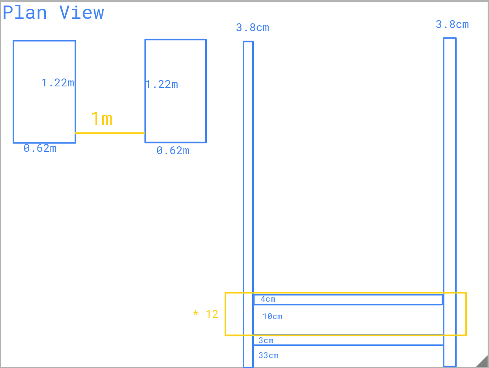
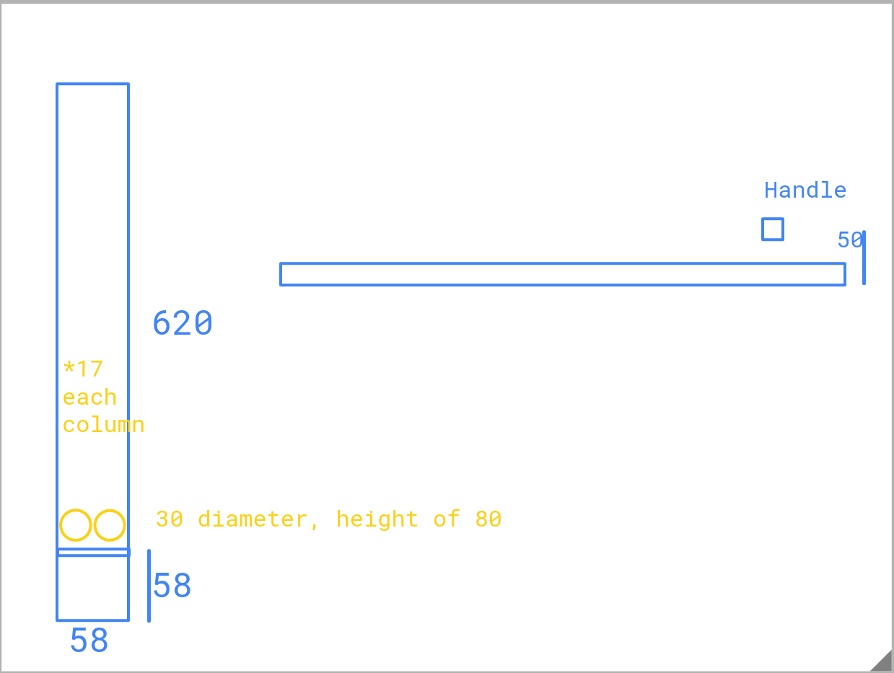
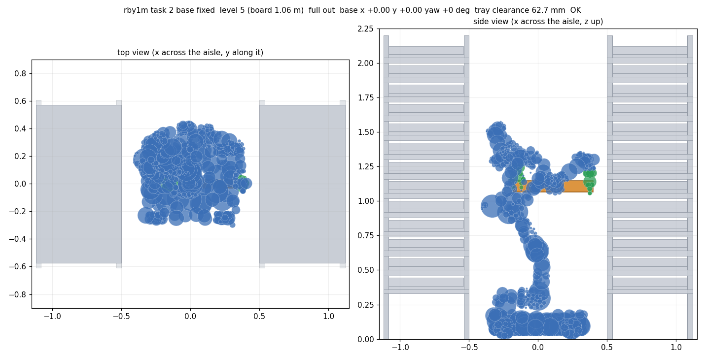
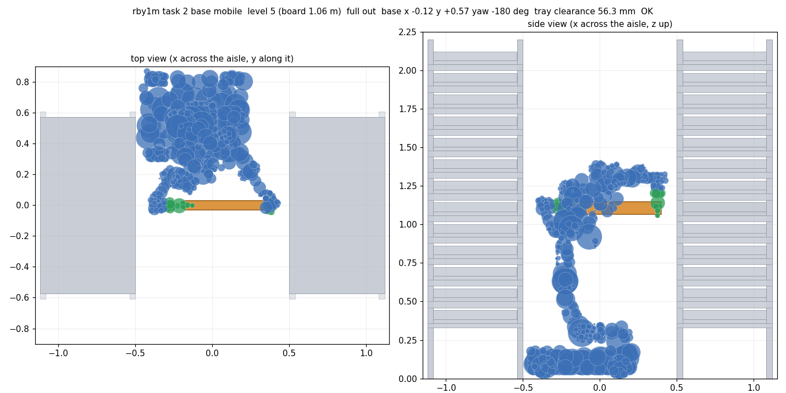

Shelf reachability
Which tray level can each wheeled humanoid work in a 1.0 m aisle between two 13-level shelves?
Computed with whole-body, two-handed, collision-aware inverse kinematics (cuRobo) against the same shelf geometry as the Gazebo world. A level counts as workable when a pose exists that puts both hands on target with no part of the robot touching the shelves, the other trays or the tray it holds.
Robots: Rainbow RB-Y1 (Model M, mecanum) · pending: Lanxin VB2, Galbot G1, SpiritAI Moz1
Setup
- Shelves: two, 1.22 m long, 0.62 m deep, facing each other across a 1.0 m aisle. Bottom board top at 0.36 m, then 12 levels every 0.14 m (top board 2.04 m). 19 trays per level, 34 vials (2 × 17) per tray.
- Task 1, pull + suction pick: the left hand holds the tray handle with the tray pulled 25 cm out (its back end stays on the board as the datum); the right hand, an emulated suction tool pointing down (13 cm long), touches a vial in a row clear of the board above (rows 1–4; the 10 cm gap between boards leaves ~17 mm above the vials inside the shelf).
- Task 2, full tray with two hands: the tray is fully out (back end 10 cm in front of the shelf); the left hand holds the handle (from the front or from above), the right hand holds the back end from above, fingers either side of the tray.
- Fixed base: robot at the aisle centre facing the shelf (as spawned in Gazebo). Moving base: the solver may also place and turn the base anywhere in the aisle.


Rainbow RB-Y1 (Model M, mecanum)
Task 1, fixed base
level 8
board top 1.48 m
Task 1, moving base
level 8
board top 1.48 m
Task 2, fixed base
level 8
board top 1.48 m
Task 2, moving base
level 8
board top 1.48 m
| Level board top | Task 1 fixed base | Task 1 moving base | Task 2 fixed base | Task 2 moving base |
|---|---|---|---|---|
| 122.04 m | ✗misses by 368 mm | ✗misses by 369 mm | ✗misses by 393 mm | ✗misses by 335 mm |
| 111.90 m | ✗misses by 366 mm | ✗misses by 221 mm | ✗misses by 268 mm | ✗misses by 360 mm |
| 101.76 m | ✗misses by 36 mm | ✗misses by 27 mm | ✗misses by 94 mm | ✗misses by 581 mm |
| 91.62 m | ✗misses by 16 mm | ✗misses by 22 mm | ✗misses by 96 mm | ✗misses by 67 mm |
| 81.48 m | ✓rows 1, 2, 3 | ✓rows 1, 2, 3, 4 · base +0.14, +0.23 m, +101° | ✓ | ✓base +0.10, +0.52 m, -116° |
| 71.34 m | ✓rows 1, 2, 3, 4 | ✓rows 1, 2, 3, 4 · base +0.08, -0.26 m, +106° | ✓ | ✓base -0.01, -0.18 m, -166° |
| 61.20 m | ✓rows 1, 2, 3, 4 | ✓rows 1, 2, 3, 4 · base -0.03, -0.60 m, +81° | ✓ | ✓base -0.03, -0.20 m, +4° |
| 51.06 m | ✓rows 1, 2, 3, 4 | ✓rows 1, 2, 3, 4 · base -0.16, +0.58 m, +92° | ✓ | ✓base -0.12, +0.57 m, -180° |
| 40.92 m | ✓rows 1, 2, 3, 4 | ✓rows 1, 2, 3, 4 · base +0.12, -0.58 m, -57° | ✓ | ✓base +0.02, -0.35 m, -23° |
| 30.78 m | ✓rows 1, 2, 3, 4 | ✓rows 1, 2, 3, 4 · base +0.02, -0.39 m, +121° | ✓ | ✓base +0.04, -0.19 m, +36° |
| 20.64 m | ✓rows 1, 2, 3, 4 | ✓rows 2, 3, 4 · base -0.01, +0.60 m, +93° | ✓ | ✓base -0.07, +0.60 m, -180° |
| 10.50 m | ✓rows 1, 2, 3, 4 | ✓rows 1, 2, 3, 4 · base -0.05, +0.60 m, +92° | ✗misses by 19 mm | ✓base +0.05, -0.59 m, +134° |
| 00.36 m | ✓rows 1, 2, 3 | ✓rows 1, 2, 3, 4 · base -0.07, -0.46 m, +80° | ✗misses by 8 mm | ✓base +0.00, +0.34 m, +94° |
✓ = a collision-free whole-body pose exists (hover for the vial rows / base pose); ✗ = closest attempt and why it failed.


Method
- Robot geometry from the robots' URDFs (rochestra), approximated by collision spheres fitted automatically to the meshes; self-collision checked.
- Collision scene: every collision box of the Gazebo world, minus the target tray, plus a keep-out box under each shelf (the robot may not drive under the bottom board).
- Each solution is re-checked against the whole tray (only the hands may touch it), and its hand poses re-computed independently from the original URDF (worst error 2.7 mm, tolerance 5 mm).
- Task 1 tries 256 random start poses per problem, task 2 1024 (its solutions are narrow).
Not covered yet
- Joint torques and payload (tray assumed 2.44 kg), balance, and the motion between poses: only the key holding pose is checked.
- Real shelf details: whether the space under the bottom board is open (assumed closed), and the tray length (sketch says 620 mm; the model uses 580 mm = 58 handle + 17 × 30 + 12).
Reproduce
git clone https://github.com/artc-asr/givaudan_automation_sim.git && cd givaudan_automation_sim ./scripts/setup_workspace.sh # ROS 2 Humble workspace (robot descriptions) # cuRobo: see reachability/README.md env -u PYTHONPATH deps/curobo-venv/bin/python reachability/sweep.py --robot rby1m --task 2 --base mobile python3 reachability/build_docs.py # rebuilds this page